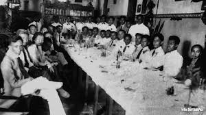
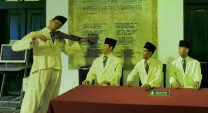

“Perceraiberaian itu wajiblah diperangi, agar kita bisa bersatu” (Sambutan Sugondo Djojopuspto dalam pembukaan kongres) Rapat pertama, malam hari Sabtu, 27 Oktober 1928, di Gedung Katholieke Jongenlingen Bond (KJB), Ketua Kongres, Sugondo Djojopuspito, memberi sambutan. Ia berharap kongres ini dapat memperkuat semangat persatuan dalam sanubari para pemuda. Acara dilanjutkan dengan uraian Mohammad Yamin tentang arti dan hubungan persatuan dengan pemuda. Menurutnya, ada lima faktor yang bisa memperkuat persatuan Indonesia yaitu sejarah, bahasa, hukum adat, pendidikan, dan kemauan.

Rapat kedua, pagi hari, Minggu, 28 Oktober 1928, di Gedung Oost-Java Bioscoop, membahas masalah pendidikan. Kedua pembicara, Poernomowoelan dan Sarmidi Mangoensarkoro, berpendapat bahwa anak harus mendapat pendidikan kebangsaan, harus pula ada keseimbangan antara pendidikan di sekolah dan di rumah. Anak juga harus dididik secara demokratis. 
Rapat ketiga, sore hari, Minggu, 28 Oktober 1928, Soenario menjelaskan pentingnya nasionalisme dan demokrasi selain gerakan kepanduan. Kemudian Ramelan mengemukakan tentang gerakan kepanduan yang tidak bisa dipisahkan dari pergerakan nasional. Gerakan kepanduan sejak dini mendidik anak-anak disiplin dan mandiri, hal-hal yang dibutuhkan dalam perjuangan. Theo Pengamanan menyampaikan bahwa pandu sejati adalah pandu berdasarkan semangat kebangsaan dan rasa cinta tanah air Indonesia. Sebelum kongres ditutup diperdengarkan lagu “Indonesia Raya” oleh Wage Rudolf Supratman melalui lantunan biola. Lagu tersebut disambut dengan sangat antusias oleh peserta kongres. Kemudian kongres ditutup dengan pembacaan sebuah keputusan oleh Sugondo Djojopuspito. Keputusan ini dirumuskan oleh Mohammad Yamin. 
Kerapatan pemuda-pemuda Indonesia diadakan oleh perkumpulan-perkumpulan pemuda Indonesia yang berdasarkan kebangsaan dengan namanya Jong Java, Jong Soematra (Pemoeda Soematra), Pemoeda Indonesia, Sekar Roekoen, Jong Islamieten, Jong Bataksbond, Jong Celebes, Pemoeda Kaoem Betawi dan Perhimpoenan Peladjar2 Indonesia. Membuka rapat pada tanggal 27 dan 28 Oktober tahun 1928 di negeri Djakarta: Sesudahnya mendengar pidato-pidato pembicaraan yang diadakan didalam kerapatan tadi; Sesudahnya menimbang segala isi-isi pidato-pidato dan pembicaraan ini.